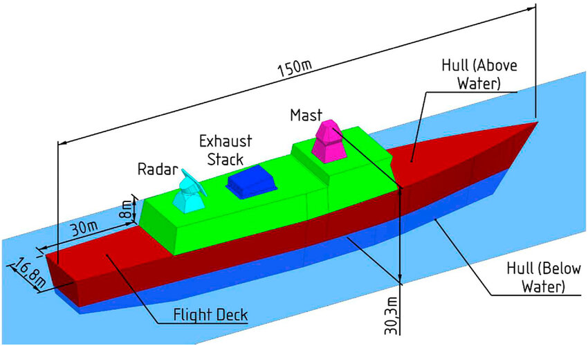
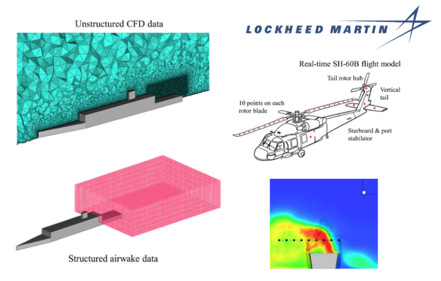
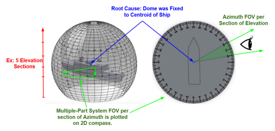
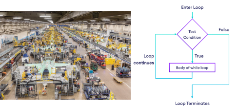

Cybertruck Robotic Cell Re-Design
Role: Equipment Engineering Intern @ Tesla
Problem: A key robotic cell on the Cybertruck production line was improperly disposing of rejected seat structures, dropping them on the floor. This resulted in hundreds of thousands of dollars in annual material scrap, frequent production downtime for manual retrieval, and created a safety hazard for associates entering the cell.
My Solution: As the sole owner of this project, I engineered a complete mechanical and robotics solution. I designed a custom, non-intrusive rejection chute from the ground up using Solidworks and Siemens NX, ensuring it integrated seamlessly into the existing cell's tight footprint. I then single-handedly reprogrammed the entire Fanuc robotic logic, rewriting the pathing to flawlessly deposit rejected parts into the new assembly.
Results: I drove the project through the full lifecycle, leading a cross-functional team of stakeholders from manufacturing, compliance, and testing to successfully implement my design. [cite_start]The solution completely eliminated the scrap issue and associated downtime, **delivering an annual savings of over $175,000** while improving cell safety and maintaining the original workflow for production associates[cite: 346].

Advanced System Integration Lead
Role: Mechanical Design TPM Intern @ Lockheed Martin
Problem: Tasked as the integration lead for a proprietary, mission-critical system on the CSC, I was responsible for navigating conflicting constraints from three external vendors and internal RF, electrical, and mechanical design teams. The challenge was to find a viable integration path that did not compromise system performance, ship layout, or classified design integrity.
[cite_start]My Solution: I took extreme ownership of the project, serving as the single point of contact for all 4 vendors and our internal cross-functional teams[cite: 351]. I personally drove the technical design, using my mechanical background to model and propose design changes in SolidWorks to resolve physical, thermal, and RF constraints. My key responsibility was to distill highly technical, classified system requirements from a secure lab into actionable, unclassified design and manufacturing tasks for vendors, ensuring they could execute their scope without compromising project security.
[cite_start]Results: By proactively managing scope, schedule, and complex technical trades, I successfully aligned all stakeholders on a final, approved integration path[cite: 351]. This cleared a major bottleneck for a critical program milestone, and my role as the bridge between technical engineering, vendor management, and program leadership ensured the project remained on schedule and met all system requirements.

CSC Topside Mechanical Design & Integration
Role: Mechanical Design TPM Intern @ Lockheed Martin
Problem: Relocating critical topside equipment on the CSC required complex mechanical integration solutions to satisfy competing constraints from RF performance, thermal loads, structural integrity, aerodynamic factors, and vendor specifications. Failure to find mechanically sound placements would impact system functionality and project timelines.
[cite_start]My Solution: I led the mechanical design effort for several key equipment placements[cite: 350]. This involved creating detailed feasibility studies and 3D models in SolidWorks to evaluate various integration options against all constraints. I collaborated closely with internal RF, Thermal, and Aero analysis teams to incorporate their findings into the mechanical designs, and worked directly with equipment vendors to ensure mechanical compatibility and address integration challenges. I then presented the technical trade-offs and proposed mechanically viable design solutions to management.
[cite_start]Results: My mechanical design analyses and cross-functional leadership resulted in the successful approval and implementation path for **9 critical equipment placements** within 4 months[cite: 350]. This work ensured the mechanical integrity and functional performance of the topside systems while balancing complex interdisciplinary requirements.

Helicopter Landing Thermal Analysis (CFD)
Role: Aerodynamics/RF Engineering Intern @ Lockheed Martin
{/* Updated role title based on resume */}
Problem: The Canadian Surface Combatant (CSC) program needed to validate safe helicopter landing conditions, but it was unknown how hot turbine exhaust would affect the flight deck under dozens of different headwind angles, engine throttles, and outtake arrangements. [cite_start]The team lacked the critical thermal data required for RANS/LES simulations[cite: 356].
My Solution: I developed the foundational thermodynamic model to solve this problem. [cite_start]I first calculated the previously unknown engine exhaust mass flow rates and temperatures for all required scenarios, working with vendors to establish proper power distribution[cite: 356]. [cite_start]Using this data, I developed, meshed, and analyzed over 20 CSC ship model iterations in ANSYS Fluent to model all combinations of headwind angles and engine uptake conditions[cite: 358]. [cite_start]I also collaborated with the RF team on antenna coupling analyses[cite: 357].
Results: My simulations generated thermal contour maps showing the maximum temperature over the flight deck for every possible condition. I consolidated this complex data into a single, concise 'logic board' that was delivered to vendors, enabling them to validate safe helicopter landing envelopes for the multi-billion dollar program.

Company-Wide Line-of-Sight (LOS) Process Overhaul
Role: Mechanical Design TPM Intern @ Lockheed Martin
{/* Role assumed based on other LM entry */}
[cite_start]Problem: The existing company procedure for conducting line-of-sight (LOS) analysis for critical topside equipment on the Canadian Surface Combatant (CSC) program contained significant discrepancies, leading to inaccurate results and potential rework[cite: 352].
[cite_start]My Solution: After identifying the root cause of the errors, I led the complete redevelopment of a new, more accurate LOS analysis procedure using SolidWorks[cite: 352]. [cite_start]I created all documentation for the new standard and personally trained other engineers on its proper implementation to ensure company-wide adoption[cite: 352].
[cite_start]Results: The new procedure I developed was formally adopted and **improved process accuracy by over 8%**[cite: 352]. This enhancement reduced the risk of costly design flaws and is now the standard method used for the multi-billion dollar CSC program.

Production Line Data Automation
Role: Aerospace Engineering and Logistics Intern @ RTX (Pratt & Whitney)
[cite_start]Problem: Strategic decisions for optimizing the PW800 production line were dependent on a highly inefficient, manual data-pulling process from SAP[cite: 362]. This process was slow, prone to human error, and consumed significant engineering time.
My Solution: I took the initiative to single-handedly engineer a permanent automated solution. [cite_start]I developed 13 complex Visual Basic macros from scratch that interfaced directly with SAP, looped through hundreds of processes, and automatically transformed the raw data[cite: 363]. The script features robust error handling and outputs a concise, executive-ready spreadsheet for immediate analysis.
[cite_start]Results: My script completely eliminated the manual process, **cutting company data refresh time by 8 hours per week** [cite: 363] and significantly increasing data accuracy. The solution was resiliency-tested and implemented as the new company standard, with clear documentation for maintenance and future use.